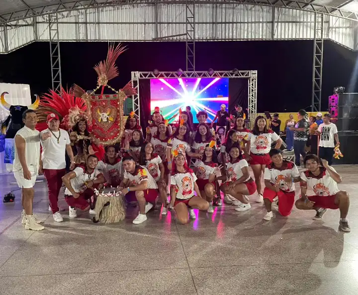

Cultura e arte popular
Preservação e difusão da cultura popular amazônica: dança, música, artes visuais, festivais e eventos culturais.

Projetos e programas
Cultura, infância e juventude, esporte e lazer, educação e meio ambiente: conheça as frentes de trabalho e os projetos da Associação.
Áreas de atuação
Preservação e difusão da cultura popular amazônica: dança, música, artes visuais, festivais e eventos culturais.
Atividades contínuas que ocupam o tempo livre de forma positiva, como alternativa protetiva e de prevenção à violência.
Dias de lazer, jogos e competições de futebol, vôlei e outras modalidades que integram famílias e participantes.
Oficinas, ensaios e vivências que formam novos artistas, lideranças e cidadãos.
Valorização da floresta, da biodiversidade e dos recursos naturais que inspiram a nossa cultura.
Parcerias e intercâmbio com grupos e organizações de Manaus, Lábrea, Porto Velho e da Rede Cultura Viva.
Projetos e programas
A dança do boi-bumbá é a raiz da Associação e o nosso principal projeto cultural. Presente no Festival Folclórico de Humaitá (Mangabafest) desde 2012, o grupo foi campeão em 2013, 2015 e 2019, e todo ano leva uma delegação de 30 dançarinos ao Festival Flor Maracujá, em Porto Velho (RO).
Cerca de 45 dançarinos de 12 a 21 anos participam a cada ano, com ensaios de fevereiro a agosto, das 19h às 21h.
Evento que reúne artistas e grupos locais em apresentações, com exposição de obras e livros. Público de 370 (2024), 300 (2025) e mais de 500 pessoas (2026). IV edição prevista para 2027.
Ensaios abertos e oficinas de dança, ritmo e expressão para jovens de 12 a 21 anos. O elenco se renova entre 50% e 90%, abrindo espaço para novas gerações.
Competições esportivas internas e, pelo menos uma vez por mês, um dia de lazer com alimentação e brincadeiras na quadra da Associação.
Troca com grupos de Manaus, Lábrea e Porto Velho. Recebemos cerca de 30 integrantes de cada cidade durante o festival.
Todo ano, em outubro ou novembro, encontro com alimentação e lazer para participantes e famílias.
Auto tradicional do boi-bumbá, realizado com apoio da Política Nacional Aldir Blanc (PNAB) municipal.